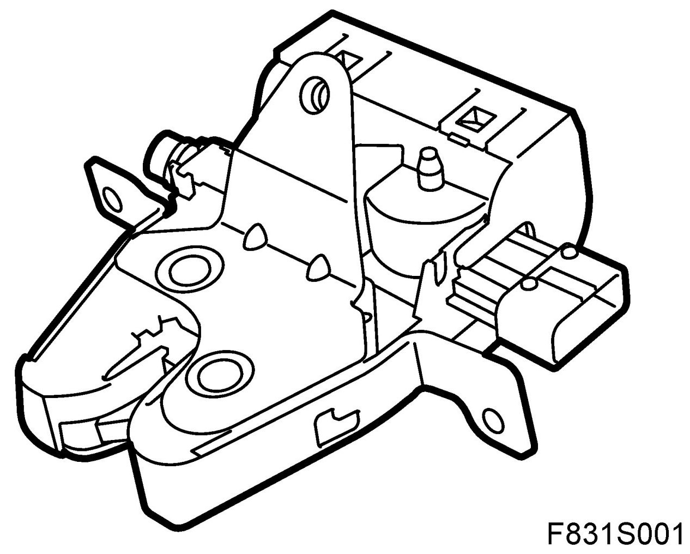
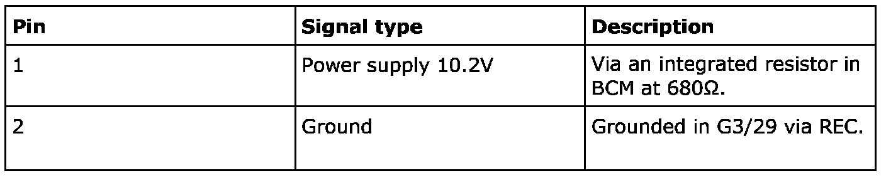
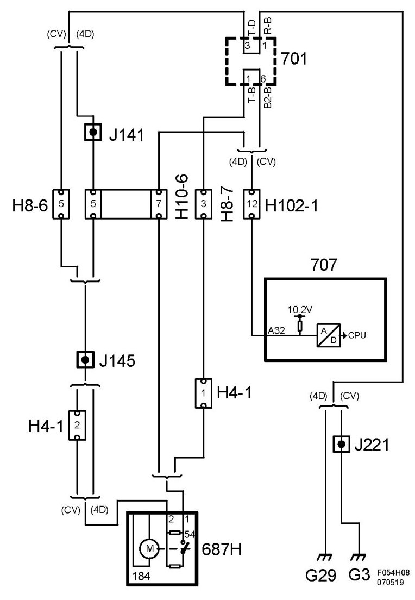
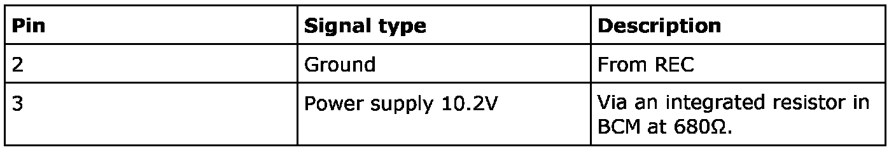
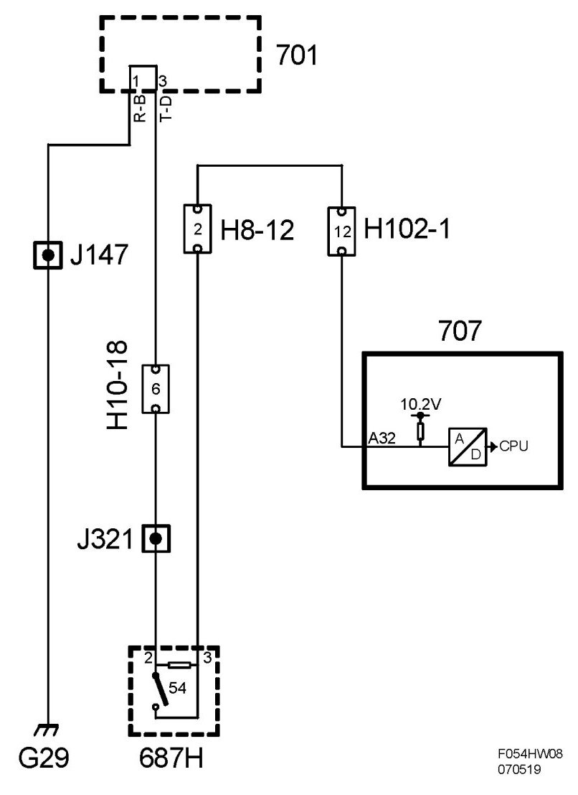

Trunk / Liftgate Switch: Description and Operation
Switch, Door, Boot Lid (54H)
Location
Connector, boot lid (54H)
Main task
- Unlock luggage compartment.
- Using a switch to indicate whether the bootlid is open or closed. The value is used for the anti-theft alarm function, for the luggage compartment illumination, and to inform the driver that the bootlid is not closed. The body control module sends the status of the switch on the bus.
Type
The central locking system motor has one electric motor, which via a worm gear is connected to the lock mechanism. The motor has 2 connections. The switch contains a single pole breaker and 2 resistors. When the bootlid is closed the breaker is open and the resistance is 1.8 kohm. When the bootlid is opened the breaker makes and a resistance of 620 ohm is connected in parallel with the original resistance. The total resistance then drops to 460 ohm.

Connection 4D/CV
Switch
Pin 2 is ground from the rear electrical centre in the luggage compartment and pin 1 feeds with 10.2V via an resistor of 680 ohm integrated in BCM. The voltage measured across the pins will be approximately 4.1V when the breaker is made and approximately 7.4V when open. If the control module sees 10.2V or 0V it will be interpreted as an error in the circuit.
In order to save current when the car is not driven BCM will pulse the voltage to the switch for 2.5 ms at 375 ms intervals as soon as the car's bus communication stops.

Diagram

Connection 5D
Switch
Pin 2 is ground from the rear electrical centre and pin 3 is supplied 10.2V via an resistor of 680 ohm integrated in BCM. The voltage measured across the pins will be approximately 4.1V when the switch is closed and approximately 7.4V when open. If the control module reads 10.2V or 0V it will interpret such as an error in the circuit.
In order to save current when the car is not driven BCM will pulse the voltage to the switch for 2.5 ms at 375 ms intervals as soon as the car's bus communication stops.

Diagram
